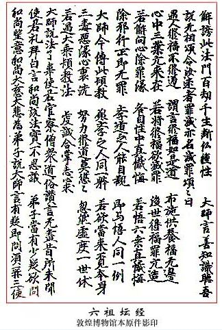

六祖壇經（敦煌寫本）
南宗頓教最上大乘摩訶般若波羅蜜經
六祖惠能大師於韶州大梵寺施法壇經一卷
──兼受無相戒弘法弟子法海集記
1、惠能大師於大梵寺講堂中，升高座，說摩訶般若波羅蜜法，授無相戒。其時座下僧尼道俗一萬餘人，韶州刺史韋據及諸官僚30餘人，儒士餘人，同請大師說摩訶般若波羅蜜法。刺史遂令門人僧法海集記，流行後代，與學道者，承此宗旨，遞相傳授，有所依約，以為稟承，說此《壇經》。

2、能大師言：「善知識，淨心念摩訶般若波羅蜜法。」
大師不語，自淨心神，良久乃言：
善知識靜聽。惠能慈父，本官范陽，左降，遷流南新州百姓。惠能幼小，父亦早亡。老母孤遺，移來南海。艱辛貧乏，於市賣柴。忽有一客買柴，遂領惠能至於官店。客將柴去，惠能得錢。卻向門前，忽見一客讀《金剛經》。惠能一聞，心明便悟。乃問客曰：「從何處來，持此經典？」客答曰：「我於蘄州黃梅縣東馮墓山禮拜五祖弘忍和尚。見今在彼門人有千餘眾。我於彼聽見大師勸道俗，但持《金剛經》一卷，即得見性，直了成佛。」
惠能聞說，宿葉有緣，便即辭親，往黃梅馮墓山禮拜五祖弘忍和尚。
3、弘忍和尚問惠能曰：「汝何方人，來此山禮拜吾？汝今向吾邊復求何物？」
惠能答曰：「弟子是嶺南人，新州百姓，今故遠來禮拜和尚。不求餘物，唯求佛法作。」
大師遂責惠能曰：「汝是嶺南人，又是獦獠，若未為堪作佛法。」
惠能答曰：「人即有南北，佛性即無南北，獦獠身與和尚不同，佛性有何差別？」
大師欲更共議，見左右在旁邊，大師更便不言，遂發遣惠能，令隨眾作務。時有一行者，遂著惠能於碓坊踏碓八個餘月。
4、五祖忽於一日喚門人盡來。門人集訖，五祖曰：「吾向汝說，世人生死事大，汝等門人終日供養，只求福田，不求出離生死苦海。汝等自性迷，福門何可救汝？汝總且歸房自看，有智慧者，自取本性般若之知各作一偈呈吾。吾看汝偈，若悟大意者，付汝衣法，稟為六代，火急作。」
5、門人得處分，卻來各至自房。遞相謂言：「我等不須呈心用意作偈，將呈和尚。神秀上座是故教授師，秀上座得法後，自可依止，請不用作。」諸人識心，盡不敢呈偈。
時大師堂前有三間房廊，於此廊下供養，欲畫楞伽變，並畫五祖大師傳授衣法，流行後代為記。畫人盧坅看壁了，明日下手。
6、上座神秀思惟：「諸人不呈心偈，緣我為教授師。我若不呈心偈，五祖如何得見我心中見解深淺？我將心偈上五祖，呈意即善，求法、覓祖不善，卻同凡心奪其聖位。若不呈心，修不得法。」良久思惟：「甚難甚難。」夜至三更，不令人見，遂向南廊下中間壁上題作呈心偈，欲求衣法。「若五祖見偈，言此偈語，若訪覓我，我見和尚，即雲是秀作。五祖見偈，言不堪，自是我迷，宿葉障重，不合得法。聖意難測，我心自息。」
秀上座三更於南廊下中間壁上，秉燭題作偈。人盡不知。偈曰：
身是菩提樹，心如明鏡台。
時時勤拂拭，莫使有塵埃。
7、神秀上座題此偈畢，卻歸房臥，並無人見。
五祖平旦，遂喚盧供奉來南廊下畫楞伽變。
五祖忽見此偈，請記。乃謂供奉曰：「弘忍與供奉錢三十千，深勞遠來，不畫變相也。《金剛經》云：『凡所有相，皆是虛妄。』不如留此偈，令迷人誦。依此修行，不墮三惡。依法修行，有大利益。」
大師遂喚門人盡來，焚香偈前，眾人見已，皆生敬心。「汝等盡誦此偈者，方得見性。依此修行，即不墮落。」門人盡誦，皆生敬心，喚言「善哉。」
五祖遂喚秀上座於堂內門：「是汝作偈否？若是汝作，應得我法。」秀上座言：「罪過！實是神秀作，不敢求祖。願和尚慈悲，看弟子有少智慧，識大意否？」五祖曰：「汝作此偈，見解只到門前，尚未得入。凡夫依此偈修行，即不墮落。作此見解，若覓無上菩提，即不可得。要入得門，見自本性。汝且去，一兩日來思惟，更作偈來呈吾。若入得門，見自本性，當付汝衣法。」
秀上座去數日，作偈不得。
8、有一童子，於碓坊邊過，唱誦此偈。惠能一聞，知未見性，即識大意。能問童子：「適來誦者，是何言偈？」童子答能曰：「你不知大師言生死事大，欲傳衣法，令門人等：『各作一偈來呈吾看，悟大意即付衣法，稟為六代祖。』有一上座名神秀，忽於南廊下書無相偈一首。五祖令諸門人盡誦。悟此偈者，即見自性；依此修行，即得出離。」
惠能答曰：「我此踏碓八個餘月，未至堂前，望上人引惠能至南廊下，見此偈禮拜，亦願誦取，結來生緣，願生佛地。」
童子引能至南廊下，能即禮拜此偈。為不識字，請一人讀。惠能聞已，即識大意。惠能亦作一偈，又請得一解書人於西間壁上題著，呈自本心。不識本心，學法無益。識心見性，即悟大意。惠能偈曰：
菩提本無樹，明鏡亦無台。
佛性常清淨，何處染塵埃。
又偈曰：
心是菩提樹，身為明鏡台。
明鏡本清淨，何處染塵埃。
院內徒眾見能作此偈，盡怪。惠能卻入碓坊。
五祖忽來廊下，見惠能偈，即知識大意。恐眾人知，五祖乃謂眾人曰：「此亦未得了。」
9、五祖夜至三更，喚惠能堂內，說《金剛經》。惠能一聞，言下便悟。其夜受法，人盡不知，便傳頓教及衣：「汝為六代祖，衣將為信稟，代代相傳。法以心傳心，當令自悟。」五祖言惠能：「自古傳法，氣如懸絲。若住此間，有人害汝，汝即須速去。」
10、能得依法，三更發去。五祖自送能於九江驛，登時便別。五祖處分：「汝去努力，將法向南，三年勿弘。此法難去，在後弘化，善誘迷人。若得心開，與悟無別。」辭違已了，便發向南。
11、兩月中間，至大庾嶺。不知向後有數百人來，欲擬捉惠能，奪衣法。來至半路，盡總卻回。唯有一僧，姓陳名惠順，先是三品將軍，性行粗惡，直至嶺上，來趁把著，惠能即還法衣，又不肯取：「我故遠來求法，不要其衣。」能於嶺上，便傳法惠順。惠順得聞，言下心開。能使惠順即卻向北化人。
12、惠能來於此地，與諸官僚道俗，亦有累劫之因。教是先聖所傳，不是惠能自知。願聞先聖教者，各須淨心聞了，願自除迷，如先代悟。（下是法）
惠能大師喚言：
善知識！菩提般若之智，世人本自有之，即緣心迷，不能自悟，需求大善知識，示道見性。
善知識！愚人智人，佛性本亦無差別，只緣迷誤。迷即為愚，悟即成智。
13、善知識！我此法門，以定慧為本。第一勿迷言慧定別。慧定體不一不二，即定是慧體，即慧是定用。即慧之時定在慧，即定之時慧在定。善知識，此義即是慧等。學道之人作意，莫言先定發慧，先慧發定，定慧各別。作此見者，法有二相。口說善，心不善，慧定不等。心口俱善，內外一種，定慧即等。自悟修行，不在口諍。若諍先後，即是迷人。不斷勝負，卻生法我，不離四相。
14、一行三昧者，於一切時中，行住坐臥，常行真心是。《淨名經》云：「真心是道場，真心是淨土。」莫心行諂曲，口說法直。口說一行三昧，不行真心，非佛弟子。但行真心，於一切法上無有執著，名一行三昧。迷人著法相，執一行三昧，真心坐不動，除妄不起心，即是一行三昧。若如是，此法同無情，卻是障道因緣。道須通流，何以卻滯？心在住，即通流住，即被縛。若坐不動，是維摩詰不合呵舍利弗宴坐林中。
善知識！又見有人教人坐，看心看淨，不動不起，從此置功。迷人不悟，便執成顛倒。即有數百般如此教道者，故知大錯。
15、善知識！定慧猶如何等？如燈光。有燈即有光，無燈即無光。燈是光之體，光是燈之用。名即有二，體無兩般。此定慧法，亦復如是。
16、善知識！法無頓漸，人有利鈍。迷即漸勸，悟人頓修。識自本心，是見本性。悟即元無差別，不悟即長劫輪迴。
17、善知識！我自法門，從上已來，頓漸皆立無念為宗，無相為體，無住為本。何明為相無相？於相而離相。無念者，於念而不念。無住者，為人本性，唸唸不住。前唸唸念，後唸唸念，相續無有斷絕。若一念斷絕，法身即離色身。唸唸時中，於一切法上無住。一念若住，唸唸即住，名繫縛。於一切法上唸唸不住，即無縛也。以無住為本。
善知識！外離一切相，是無相。但能離相，性體清淨，是以無相為體，於一切境上不染，名為無念。於自念上離境，不於法上念生。莫百物不思，念盡除卻。一念斷，即無別處受生。學道者用心，莫不識法意。自錯尚可，更勸他人迷，不自見迷，又謗經法，是以立無念為宗。即緣迷人於境上有念，念上便起邪見，一切塵勞妄念，從此而生。然此教門立無念為宗。世人離境，不起於念。若無有念，無念亦不立。無者無何事？念者何物？無者，離二相諸塵勞。真如是念之體，念是真如之用。性起念，雖即見聞覺知，不染萬境，而常自在。《維摩經》云：「外能善分別諸法相，內於第一義而不動。」
18、善知識！此法門中，坐禪元不著心，亦不著淨，亦不言動。若言看心，心元是妄。妄如幻故，無所看也。若言看淨，人性本淨。為妄念故，蓋覆真如。離妄念，本性淨。不見自性本淨，起心看淨，卻生淨妄。妄無處所，故知看者看卻是妄也。淨無形相，卻立淨相，言是功夫。作此見者，障自本性，卻被淨縛。若不動者，見一切人過患，是性不動。迷人自身不動，開口即說人是非，與道違背。看心看淨，卻是障道因緣。
19、今記如是。此法門中何名坐禪？此法門中，一切無礙。外於一切境界上，念不去為坐，見本性不亂為禪。何名為禪定？外離相曰禪，內不亂曰定。外若有相，內性不亂，本性自淨曰定。只緣境觸，觸即亂，離相不亂即定。外離相即禪，內外不亂即定。外禪內定，故名禪定。《維摩經》云：「即時豁然，還得本心。」《菩薩戒》云：「本原自性清淨。」善知識！見自性自淨，自修自作，自性法身，自行佛行，自作自成佛道。
20、善知識！總須自聽，與授無相戒。一時逐惠能口道，令善知識見自三身佛：於自色身，歸依清淨法身佛；於自色身，歸依千百億化身佛；於自色身，歸依當身圓滿報身佛。（已上三唱）色身是舍宅，不可言歸。向者三身，在自法性，世人盡有，為迷不見。外覓三世如來，不見自色身中三世佛。
善知識！聽與善知識說，令善知識於自色身，見自法性有三世佛。此三身佛，從自性上生。何名清淨身佛？善知識！世人性本自淨，萬法在自性，思惟一切惡事，即行於惡行。思量一切善事，便修於善行。知如是，一切法盡在自性，自性常清淨，日月常明。只為雲覆蓋，上明下暗，不能了見日月星辰。忽遇慧風吹散，卷盡雲霧，萬象參羅，一時皆現。世人性淨，猶如清天。慧如日，智如月，智慧常明。於外看境，妄念浮雲蓋覆，自性不能明，故遇善知識開真正法，吹卻迷妄，內外明徹，於自性中萬法皆現。一切法在自性，名為清淨法身。自歸依者，除不善心及不善行，是名歸依。
何名為千百億化身佛？不思量，性即空寂；思量，即是自化。思量惡法，化為地獄；思量善法，化為天堂；毒害化為畜生，慈悲化為菩薩；智慧化為上界，愚癡化為下方。自性變化甚多，迷人自不知見。一念善，智慧即生。一燈能除千年暗，一智能滅萬年愚。莫思向前，常思於後。常後念善，名為報身。一念惡，報卻千年善心；一念善，報卻千年惡滅。無常已來，後念善，名為報身。從法身思量，即是化身；唸唸善，即是報身。自悟自修，即名歸依也。皮肉是色身，是舍宅，不在歸依也。但悟三身，即識大意。
21、既自歸依三身佛已，與善知識發四弘大願。善知識！一時逐惠能道：
眾生無邊誓願度，煩惱無邊誓願斷。
法門無邊誓願學，無上佛道誓願成。（三唱）
善知識！「眾生無邊誓願度」，不是惠能度。善知識！心中眾生，各於自身自性自度。何名自性自度？自色身中邪見煩惱、愚癡迷妄，自有本覺性。只本覺性，將正見度。既悟正見般若之智，除卻愚癡迷妄，眾生各各自度。邪見正度，迷來悟度，愚來智度，惡來善度，煩惱來菩提度。如是度者，是名真度。
「煩惱無邊誓願斷」，自心除虛妄。「法門無邊誓願學」，學無上正法。「無上佛道誓願成」，常下心行，恭敬一切，遠離迷執。覺智生般若，除卻迷妄，即自悟佛道成，行誓願力。
22、今既發四弘誓願，說與善知識無相懺悔，三世罪障。
大師言：善知識！前念後念及今念，唸唸不被愚迷染，從前惡行，一時自性若除，即是懺悔。前念後念及今念，唸唸不被愚癡染，除卻從前矯雜心永斷，名為自性懺。前念、後念及今念，唸唸不被疽疫染，除卻從前疾垢心，自性若除即是懺。（已上三唱）
善知識！何名懺悔者？終身不作。悔者，知於前非。惡業恆不離心，諸佛前口說無益。我此法門中，永斷不作，名為懺悔。
23、今既懺悔已，與善知識授無相三歸依戒。
大師言：善知識！歸依覺，兩足尊；歸依正，離欲尊；歸依淨，眾中尊。從今已後，稱佛為師，更不歸依邪迷外道，願自三寶慈悲證明。善知識！惠能勸善知識歸依三寶。佛者，覺也；法者，正也；僧者，淨也。自心歸依覺，邪迷不生。少欲知足，離財離色，名兩足尊。自心歸依正，唸唸無邪故，即無愛著。以無愛著，名離欲尊。自心歸依淨，一切塵勞妄念，雖在自性，自性不染著，名眾中尊。凡夫解脫，從日至日，受三歸依戒。若言歸佛，佛在何處？若不見佛，即無所歸。既無所歸，言卻是妄。善知識！各自觀察，莫錯用意。經中只言自歸依佛，不言歸依他佛。自性不歸依，無所處。
24、今既自歸依三寶，總各各至心，與善知識說摩訶般若波羅蜜法。善知識！雖念不解，惠能與說，各各聽。
摩訶般若波羅蜜者，西國梵語，唐言大智慧彼岸到。此法須行，不在口念。口念不行，如如化。修行者，法身與佛等也。何名摩訶？摩訶者是大。心量廣大，由如虛空。莫定心禪，即落無記空。能含日月星辰，大地山河，一切草木，惡人善人，惡法善法，天堂地獄，盡在空中。世人性空，亦復如是。
25、性含萬法是大，萬法儘是自性，見一切人及非人，惡之與善，惡法善法，盡皆不捨，不可染著，由如虛空，名之為大，此是摩訶行。迷人口念，智者心。又有迷人，空心不思，名之為大，此亦不是。心量大，不行是小。莫口空說，不修此行，非我弟子。
26、何名般若？般若是智慧。一時中唸唸不愚，常行智慧，即名般若行。一念愚即般若絕，一念智即般若生。心中常愚，我修般若。無形相，智慧性即是。
何名波羅蜜？此是西國梵音，唐言彼岸到。解義離生滅。著境生滅起，如水有波浪，即是於此岸；離境無生滅，如水永長流，故即名到彼岸。故名波羅蜜。
迷人口念，智者心行。當念時有妄，有妄即非真有。唸唸若行，是名真有。
悟此法者，悟般若法，修般若行。不修即凡。一念修行，法身等佛。
善知識！即煩惱是菩提。前念迷即凡，後念悟即佛。善知識！摩訶般若波羅蜜，最尊、最上、第一，無住、無去、無來。三世諸佛從中出，將大智慧到彼岸，打破五陰煩惱塵勞。最尊、最上、第一，贊最上乘法，修行定成佛。無去、無住、無來往，是定慧等，不染一切法。三世諸佛從中變三毒為戒定慧。
27、善知識！我此法門，從八萬四千智慧。何以故？為世人有八萬四千塵勞。若無塵勞，般若常在，不離自性。悟此法者，即是無念、無憶、無著。莫起雜妄，即自是真如性。用智慧觀照，於一切法不取不捨，即見性成佛道。
28、善知識！若欲入甚深法界，入般若三昧者，直須修般若波羅蜜行。但持《金剛般若波羅蜜經》一卷，即得見性，入般若三昧，當知此人功德無量。經中分明讚歎，不能具說。此是最上乘法，為大智上根人說。少根智人若聞法，心不生信。何以故？譬如大龍，若下大雨，雨於閻浮提，如漂草葉。若下大雨，雨放大海，不增不減。若大乘者，聞說《金剛經》，心開悟解，故知本性自有般若之智。自用智慧觀照，不假文字。譬如其雨水，不從無有，元是龍王於江海中將身引此水，令一切眾生，一切草木，一切有情無情，悉皆蒙潤。諸水眾流，卻入大海。海納眾水，合為一體。眾生本性般若之智，亦復如是。
29、少根之人，聞說此頓教，猶如大地草木根性自少者，若被大雨一沃，悉皆自倒，不能增長。少根之人，亦復如是。
有般若之智與大智之人，亦無差別。因何聞法即不悟？緣邪見障重，煩惱根深，猶如大雲蓋覆於日，不得風吹，日無能現。般若之智，亦無大小，為一切眾生自有迷心，外修覓佛，未悟自性，即是小根人。聞其頓教，不信外修，但於自心令自本性常起正見，一切邪見煩惱塵勞眾生，當時盡悟，猶如大海納於眾流，小水大水合為一體，即是見性。內外不住，來去自由，能除執心，通達無礙。心修此行，即與《般若波羅蜜經》本無差別。
30、一切經書及文字，小大二乘、十二部經。皆因人置。因智慧性故，故然能建立。我若無智人，一切萬法本亦不有，故知萬法本從人興。一切經書，因人說有。緣在人中，有愚有智，愚為小故，智為大人。問迷人於智者，智人與愚人說法，令使愚者悟解心開。迷人若悟心開，與大智人無別。故知不悟，即佛是眾生；一念若悟，即眾生是佛。故知一切萬法，盡在自身心中，何不從於自心，頓見真如本性。《菩薩戒經》云：「我本源自性清淨。」識心見性，自成佛道。即時豁然，還得本心。
本章完!